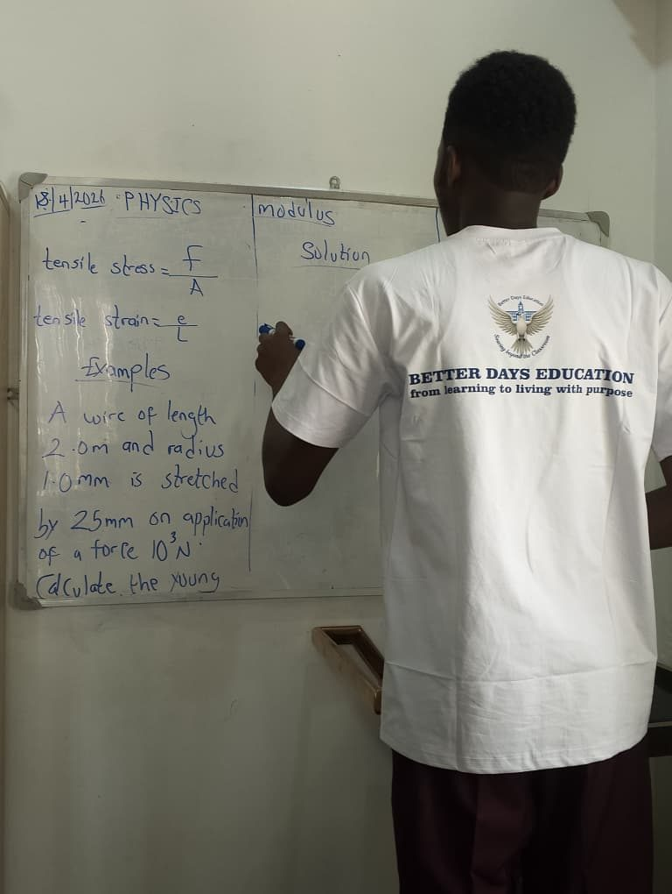

Abdulrasheed Abraham Sadiq
A private home tutor, a youth advocate and currently a student of cybersecurity.
I’m a cybersecurity student at MIVA Open University, a tutor and mentor to teenagers, a public speaker and writer, and the founder of Better Days Education brand. Welcome to my portfolio site where you'll get to know more about me, my studies, my work and my community service.
B.Sc. Cybersecurity, MIVA Open University (2025 to 2029). Based in Abuja, Nigeria.

Welcome to my portfolio
Tutor, student, speaker and founder
Hello, I’m Abdulrasheed Abraham Sadiq. I’m studying for a B.Sc. in Cybersecurity at MIVA Open University. I teach mathematics, science and purpose discovery to secondary school students. Currently, I serve as the Administrative Officer at Teens Connect Africa, speaking, writing and volunteering. Everything I do comes back to one aim: helping teens leave secondary school with clarity, confidence and purpose.
Welcome to my portfolio website where you'll learn more about who I am and the values i offer.
What I do
I'm an avide learner, teacher, tech enthusiast, speaker, writer, teens coach and I'm intentional about the personal growth and development of everyone around me. Everything I do points to the same goal: helping young people find clarity and discover their God-given purpose.
-
Study cybersecurity
B.Sc. at MIVA Open University, with certificates from Cisco Networking Academy, TechCrush and ALX Africa.
Education and certificates -
Teach and mentor
Mathematics and science tutoring, and monthly mentorship sessions at Teens Connect Africa that trained over 50 teens to learn hands-on skills in 2024.
Mentorship work -
Speak and write
Public and motivational speaking, storytelling, and writing about web3 and blockchain trends.
Hobbies and interests -
Serve my community
Project Keep Zuba Clean, a climate programme with Save the Children International, and child-protection advocacy with CADSI.
Community projects -
Build Better Days Education
An educational consultancy and purpose-development initiative for teens aged 13 to 19, which I founded.
The full story -
Plan and organise
I keep studies and projects on track with an academic planner built in JavaScript.
Try the planner
Featured: Better Days Education
Founder and Lead Tutor
My business, and the project I’m proudest of because the vision is beyond one person. It's going to cut across different spheres of life and impact will be made. At Better Days Education, we teach mathematics and science with real life applications to secondary school school students both online and offline, we run purpose and life-skills sessions and we work towards creating a future ready generation, one life at a time. Over 13+ students taught so far through one-on-one sessions and more than 200 impacted in school sessions.
Let’s connect
I’m open to collaborating on youth, education or sustainability projects, volunteer opportunities with NGOs focused on teens, and partnerships that use AI or web3 for positive social impact.